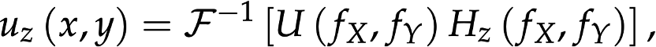
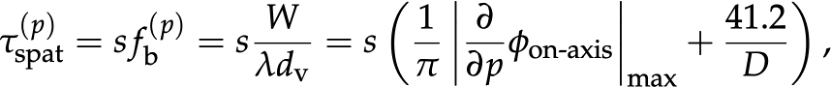
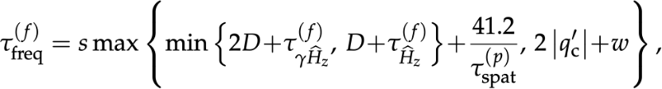

Sampling Requirements
We adopt the angular spectrum method (ASM) as it is a rigorous formulation of off-axis diffraction. An input field with an angular spectrum U has a diffraction field at distance z calculated by:
whereis the propagation function.
We propose the Least-Sampling ASM (LS-ASM) that minimizes the sampling requirements in both spatial and frequency domains and unifies the critical sampling rates for all types of input fields.
- With linear phase compensation (LPC), we shift the frequency centers of off-axis wave fields to the origin using the Fourier transform properties;
- With virtual lens model, we calculate a controllable region of band extension as a supplement to the phase gradient analysis;
- With joint component analysis, we combine different components in the same domain to determine the correct sampling rate.

We summarize the complete minimum sampling rates in both domains as:
 Simulation Results
The results are compared against a baseline method (Shift-BEASM) and the ground truth (Rayleigh-Sommerfeld Integral). Two cases of comparisons are considered:
In Case 1, where the samples in Shift-BEASM are set to achieve the same level of SNR as LS-ASM, LS-ASM consistently performs at a remarkably short runtime even at large angles (e.g., 20 degrees), outperforming the Shift-BEASM by over 35x.
In Case 2, where the samples in Shift-BEASM are set as the same rate as LS-ASM, the baseline yields incorrect results while ours consistantly performs well along all angles.
We further extend our discussions to complex and high-frequency input fields in the supplementary, and verify our theory using an example of diffuser modulation. More results, derivations, and proof are in supplementary.

BibTeX
@article{Wei:23,
title = {Modeling Off-Axis Diffraction with the Least-Sampling Angular Spectrum Method},
author = {Wei, Haoyu and Liu, Xin and Hao, Xiang and Lam, Edmund Y. and Peng, Yifan},
journal = {Optica},
volume = {10}, number = {7}, pages = {959--962},
month = jul,
year = {2023},
publisher = {Optica Publishing Group},
doi = {10.1364/OPTICA.490223}
}